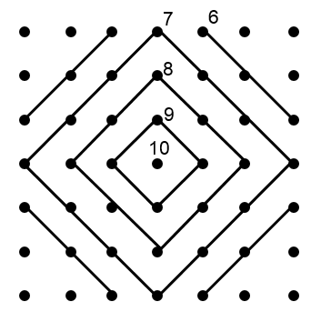

Trong một cuộc thi bắn súng, mỗi vận động viên được phát 3 viên đạn. Bia là một ma trận 7 x 7 có hình dạng như sau:

Một viên đạn bắn vào tâm được 10 điểm, bắn lần lượt vào các vòng ô bên ngoài được 9, 8, 7, 6 điểm tương ứng (không có điểm 4 và 5). Sau khi bắn 3 phát đạn máy tính sẽ tự động tính điểm của vận động viên. Bạn hãy viết chương trình tính điểm này.
Dữ liệu nhập:
- Gồm 7 dòng, mỗi dòng gồm 7 ký tự. Mỗi ký tự chỉ có 4 trường hợp: ký tự '.' (dấu chấm) nếu vị trí đó không trúng đạn, ký tự '1' nếu vị trí đó bị trúng đạn 1 lần, ký tự '2' nếu vị trí đó bị trúng đạn 2 lần, ký tự '3' nếu vị trí đó bị trúng đạn 3 lần (xem thêm ví dụ để hiểu rõ hơn). Dữ liệu cho đảm bảo tình trạng bia là hợp lệ.
Dữ liệu xuất:
- Là số nguyên thể hiện số điểm đạt được.